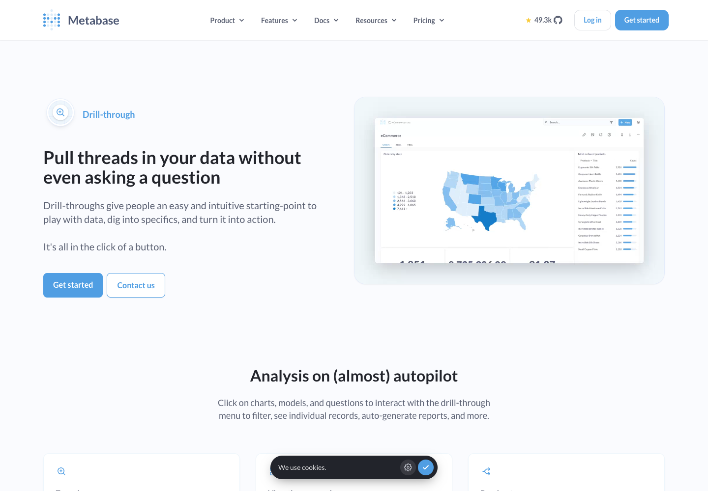

제품 이름은 사이드바와 보고서에 일관되게 표시하고, 실제 작업 공간과 데이터 범위는 별도로 설명한다.
기존 Metabase 공식 페이지 캡처. 브랜드를 크게 반복하기보다 사용자의 분석 작업에 시선을 둔다.

공식 출처analytics workspace sidebar branding 검색에서 Rows 251668, Dovetail 251474, Tango 250439 결과를 받았다. 화면 설명의 워크스페이스·로고 구분만 참고했고 해당 스크린샷은 직접 검토하지 않았다. 따라서 시각 비교 근거는 위 기존 캡처와 기존 우리 UI로 한정한다.
Clue(단서) + Phase(조사 단계·공정). “신호를 근거로, 근거를 판단으로.” 기존 심볼·색·글꼴을 유지하고 이름과 메시지를 묶는다.
브랜드 보드 · 전체 리서치 기록